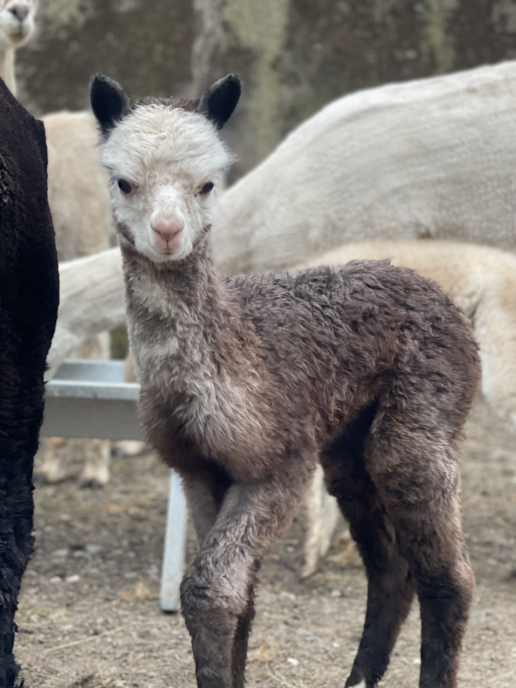
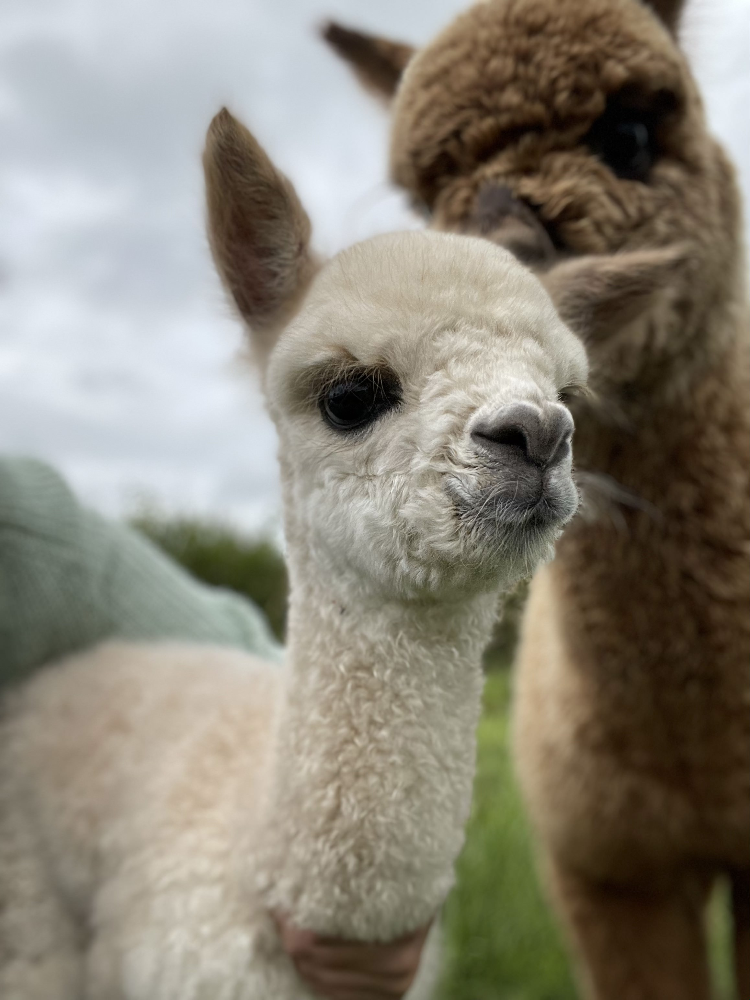
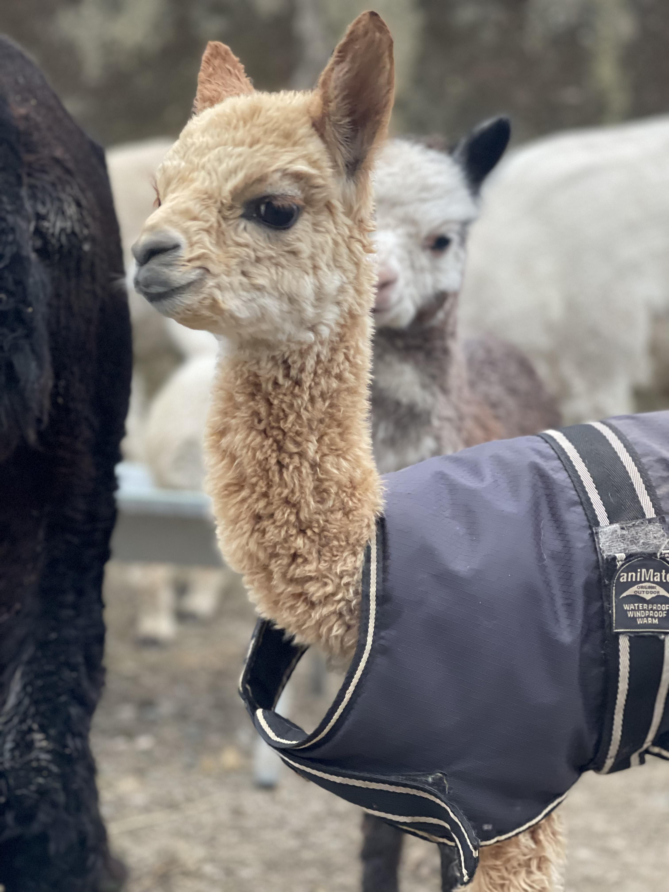

Alpaca Breeding in Northern Ireland

As we continue to grow and develop our breeding programme at Clover Hill Alpaca Farm, females are not often available for sale as many are retained to strengthen our own herd.
However, from time to time we may have well-handled pet males available, particularly following the birthing season when young males are weaned. These alpacas make excellent companions and are ideal for smallholders or anyone looking to keep alpacas as pets.
If you are interested in future availability, please feel free to contact us to discuss upcoming alpacas or to register your interest.
Some of the young alpacas born at Clover Hill Alpaca Farm.


